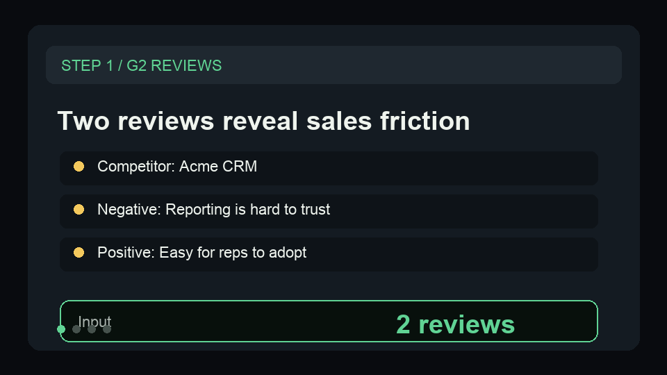

Turn G2 reviews into sales battlecard bullets.
Use a tiny competitor-review sample to show complaint themes, objections, proof quotes, and next sales-enablement actions.
{kind=link}
Ground the battlecard in buyer language.
The sample shows one negative review for objection mining and one positive review for proof language.
Paste competitor reviews
Start with two reviews before connecting a recurring scraper dataset.
Analyze themes
Inspect complaint themes, sales objections, proof quotes, and battlecard summary fields.
Update enablement
Send the strongest objections and quotes into the sales battlecard or weekly PMM update.
A tiny sample for quick proof.
Use this shape to verify the battlecard path before wiring a live G2 review feed.
{
"productName": "Northstar CRM",
"competitorName": "Acme CRM",
"reviews": [
{
"rating": 2,
"title": "Reporting is hard to trust",
"text": "The dashboards look good, but our sales ops team spends too much time checking whether pipeline numbers are current.",
"reviewDate": "2026-05-01"
},
{
"rating": 5,
"title": "Easy for reps to adopt",
"text": "Our account executives liked the clean workflow and needed almost no training before logging customer notes.",
"reviewDate": "2026-05-04"
}
]
}Show reviews becoming a battlecard row.
This short GIF previews the G2 sample, theme extraction, objection row, and product-marketing handoff before a buyer opens the Store page.

Need this adapted before the first run?
Send a public-safe workflow request if the sample, setup, or output handoff needs a variant.
Keep requests public-safe: no credentials, private URLs, customer data, emails, or sensitive business data.